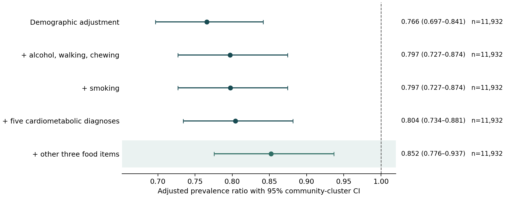
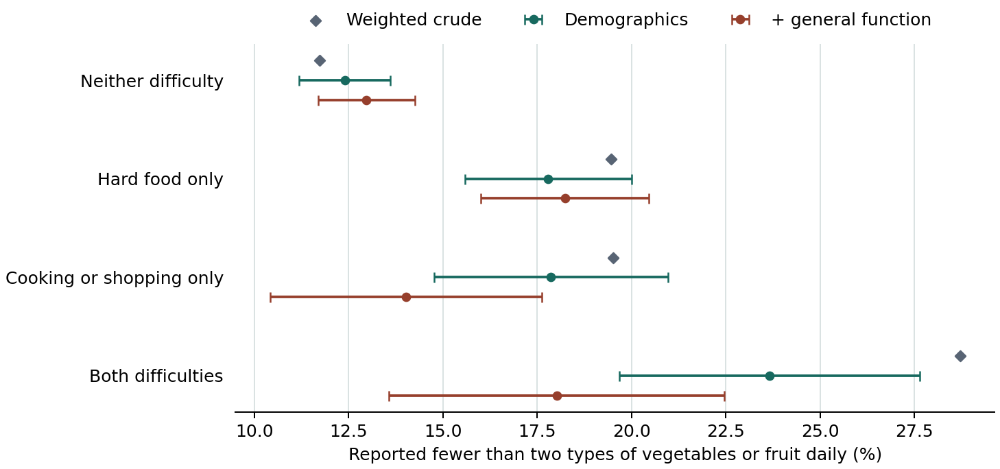
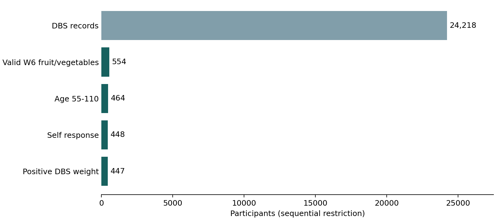

主样本与测量
11,932 人／3,991 例筛查阳性／447 个社区。55–110 岁，按官方应答年度连接。2021、2022、2023 是同一轮的访问年份。
暴露为每日是否吃≥2 种蔬菜或水果；结局为 CES-D-10≥10。它是症状筛查，不是临床抑郁症诊断。
主 PR 0.766（0.697–0.841）；加权粗症状比例为回答“是”者 29.01%、回答“否”者 42.53%。
独立支线 · CHARLS／SHARE
把已完成的问卷研究、纵向权重更新和 DBS 可行性放在一起查看。这里没有实测肠木脂素或菌群，结论沿各自的测量与设计展开。
当前判断：CHARLS 的横断面关联经调整后保留，但尚无时间顺序；SHARE 的官方加权随访区间包含 1，扩展调整后更接近 1。现有结果支持继续研究饮食与健康脆弱性，不能确认为保护作用或肠木脂素机制。
CHARLS W6 · 中国中老年人
11,932 人／3,991 例筛查阳性／447 个社区。55–110 岁，按官方应答年度连接。2021、2022、2023 是同一轮的访问年份。
暴露为每日是否吃≥2 种蔬菜或水果；结局为 CES-D-10≥10。它是症状筛查，不是临床抑郁症诊断。
主 PR 0.766（0.697–0.841）；加权粗症状比例为回答“是”者 29.01%、回答“否”者 42.53%。

| 模型 | 人数 | 比值（聚类稳健近似 95% CI） |
|---|---|---|
| 人口学调整，主模型 | 11,932 | 0.766（0.697–0.841） |
| 再调饮酒、步行、咀嚼 | 11,932 | 0.797（0.727–0.874） |
| 再调吸烟与五项心代谢病史 | 11,932 | 0.804（0.734–0.881） |
| 再调其他三类食物 | 11,932 | 0.852（0.776–0.937） |
| 家庭资源敏感性：再调耐用品类别数 | 11,924 | 0.859（0.782–0.943） |
家庭资源共同样本 11,924 人：加入耐用品前后 PR 为 0.853／0.859。其他食物相互调整改变比较对象，不能直接归因为某一种混杂。
CHARLS W6 · 另一条横断面问题
此处结局改为 DA128 回答“否”。功能共同样本 12,925 人；口腔与慢病完整样本 12,913 人、1,998 事件、150 个匿名县。与上面的 CES-D 完整题项样本不同。
固定 12,925 人，人口学调整 PR 1.368（1.213–1.542）；加一般功能后 1.039（0.837–1.290）。购物题反映健康／记忆相关任务能力，不测社区食品供给。
同样本 PR 由 1.407 变为 1.378。进一步纳入口腔状态、家庭资源及慢病，12,913 人中 PR 1.343（1.191–1.514）。
9,004 名双人家户成员加权 PR 1.285（1.101–1.500）；790 对结局不同的家户内条件 OR 1.244（0.935–1.655）。PR 与未加权条件 OR 不直接比较。

标准化后，能吃硬食者未达蔬果题标准的比例为 13.21%，不能者 17.81%，差 4.60（2.61–6.59）个百分点。
全口失牙、假牙和硬食能力分别建模；127 个失牙题空白来自既往失牙跳题，其中 79 人仍能吃硬食，不能将空白记为无失牙或不能咀嚼。
四种食物回答在同样本分别建模；奶制品接近无关联，蔬果、蛋／豆、肉／鱼／家禽结果见报告与全表。绝对差未支持明确年龄交互，也不能将访问年份差异解释为趋势。
下载标准化比例与分组表同一家户编号不能确认共餐或两人互为配偶。帮助题在无困难者中属于结构性跳题；同期帮助状态不能估计照护收益。全部为未预注册 pilot，尚未形成正式稿件。
SHARE W6 · 2015 年样本
24,218 名 DBS 参与者全部一对一连接到 W6 主访谈；有效同期蔬果回答 554 人 → 年龄合格 464 → BR 本人作答 448 → 正权重 447 人。
纵向版问卷 55,402 人中该蔬果题有效回答为 0，表明大量空白来自结构性路由。447 人的 Kish n=26.4；最大权重占 15.00%，前十占 46.62%。选择与权重集中共同限制分析。
当前只提供选中样本描述，未拟合正式饮食–DBS 多变量模型。不通过删权重或协变量寻找有利结果。

CRP 可描述 415 人、HbA1c 350、HDL 272、总胆固醇 419、甘油三酯 418；指标交集各异。CRP final 封顶 10 mg/L、甘油三酯 final 封顶 500 mg/dL，已单列未封顶描述。
完整 DBS 有 21 项指标；后 14 项的文献单位与实际发布尺度尚未全部核清。DBS 是非空腹毛细血样，不等同空腹静脉血。2015 年采样与后期检测年份需区分；无 ENL/END 或菌群。DBS 权重不能与 W8／W9 权重相乘。
已完成主分析与代理、权重、协变量、县聚类和题项缺失复核。
打开完整报告 ↗已完成任务能力、咀嚼、口腔状态、标准化比例与家户内复核。
打开完整报告 ↗历史分析阶段；当时尚缺三个补充包。当前纵向结论请看补充报告。
打开完整报告 ↗当前更新：五个纵向比较模型、同期 DBS 可行性与 All-waves 参与状态审计。
打开完整报告 ↗公开附件为研究报告、统计汇总和图表；不包含原始授权 ZIP、个人记录、ID 或链接表。报告中的历史输入状态保留并标注；当前 SHARE 为十个已归档数据包。